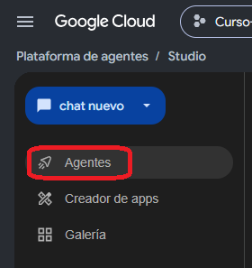

Agent Studio — fundamentos
Un agente permite convertir un método de trabajo repetible en una configuración persistente: instrucciones, modelo y capacidades que pueden volver a utilizarse para distintas solicitudes.
1. ¿Qué es un agente?
En el contexto del curso, un agente es una solución de IA configurada para aplicar un método de trabajo de forma consistente. No se limita a recibir una pregunta: puede conservar instrucciones permanentes y utilizar herramientas o conocimiento cuando la configuración lo permite.
2. Prompt puntual vs agente
Un prompt y un agente cumplen funciones distintas. El prompt describe la tarea de una conversación concreta; el agente conserva reglas que deberían repetirse entre tareas.
| Prompt puntual | Agente |
|---|---|
| Define qué necesito hacer ahora. | Define cómo debe trabajar de forma persistente. |
| Puede incluir el caso concreto. | Debe evitar quedar sobreajustado a un único caso. |
| Se escribe en el chat/Preview. | Se configura en Agent Studio. |
| Cambia de una tarea a otra. | Conserva reglas de método, límites y validación. |
3. ¿Qué es Agent Studio?
Agent Studio es el entorno visual low-code de Gemini Enterprise Agent Platform para diseñar, probar y configurar agentes dentro de Google Cloud. La documentación actual lo describe como un diseñador visual donde puedes crear flujos, configurar agentes y probar su comportamiento antes de desplegarlos.

4. Entrar y crear un agente
En la interfaz actual documentada por Google, el flujo básico es:
- Abre Google Cloud y confirma el proyecto activo.
- Entra a Agent Platform → Agent Studio.
- Abre la sección de agentes.
- Selecciona Create agent.
- Se abrirá el canvas de diseño.
- Selecciona el agente principal para editar sus detalles.

5. Name, Description e Instructions
Estos tres campos cumplen papeles diferentes y no conviene usarlos como si fueran equivalentes.
Name
Identifica al agente. Debe ser corto y reconocible.
Description
Resume el propósito del agente: qué problema intenta resolver.
Instructions
Contienen el método de trabajo persistente: orden de pasos, restricciones, criterios de validación y comportamiento esperado.
Antes de analizar: 1. identifica las fuentes que pudiste consultar; 2. distingue evidencia disponible de información faltante; 3. analiza únicamente contenido respaldado; 4. separa dato, cálculo e interpretación; 5. no inventes información ausente.
6. Model
El agente también debe tener un modelo configurado. Agent Studio permite seleccionar el modelo que potencia al agente.
7. Guardar antes de probar
La documentación actual de Agent Studio indica que un agente nuevo debe guardarse antes de poder utilizar ciertas funciones como Preview, despliegue o carga de archivos de conocimiento. Al guardarlo por primera vez se crea también la identidad necesaria para esas operaciones.
- Configura al menos Name, Description, Instructions y Model.
- Selecciona Save.
- Completa el nombre solicitado por el diálogo de guardado.
- Después del primer guardado, los cambios posteriores pueden guardarse automáticamente según la interfaz actual.
8. Flow y Preview cumplen funciones distintas
Agent Studio separa el diseño del agente de su prueba conversacional.
Flow
Vista de diseño. Permite configurar el agente principal, subagentes y su flujo.
Preview
Vista de prueba. Permite conversar con el agente y observar su respuesta antes de desplegarlo.

9. Suggested prompts: orientar al usuario
En los agentes utilizados durante el curso hemos trabajado con Suggested prompts o prompts iniciales para orientar solicitudes frecuentes. Su función es servir como punto de entrada, no reemplazar las Instructions ni limitar todo lo que el agente puede hacer.
Instructions
Reglas permanentes del agente.
Suggested prompt
Ejemplo visible de una solicitud que el usuario puede iniciar.
10. El agente de la Prueba Tipo
En la evaluación utilizaremos un agente ya configurado: Analista de Validación Integrada. Su método no está diseñado solo para una consulta SQL: primero identifica fuentes, comprende el criterio, revisa evidencia y recién después produce resultados.
- Google Cloud — Agent Platform overview
- Google Cloud — Agent Studio overview
- Google Cloud — Design agents in Agent Studio
La documentación oficial vigente describe Agent Studio como un entorno visual low-code y documenta Name, Description, Instructions, Model, Tools, Flow, Preview y el requisito de guardar el agente antes de previsualizarlo. La separación prompt puntual / instrucciones persistentes y el uso pedagógico de Suggested prompts siguen el método de la Clase 4 del curso.